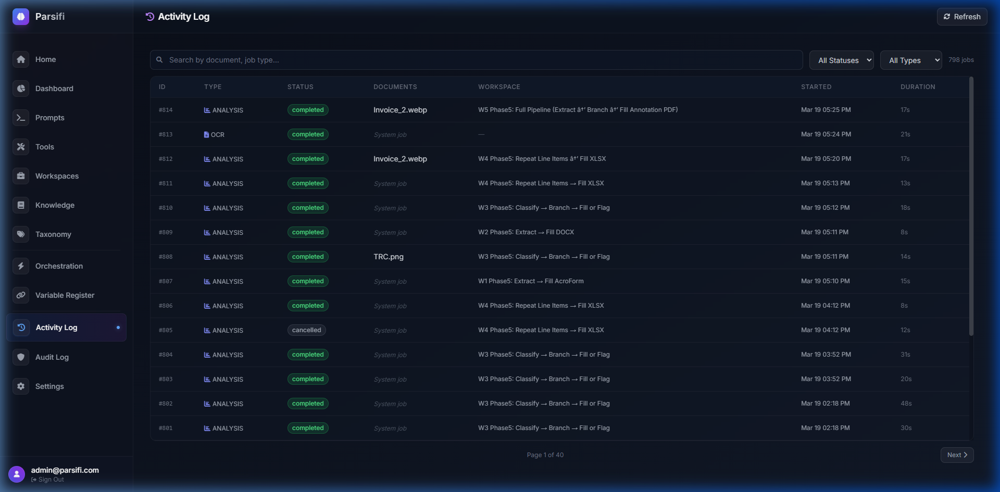

Activity Log
Track every document processing job — real-time status, duration, type, and workspace — all in one filterable table.

What is the Activity Log?
The Activity Log is a live, searchable record of every background job that Parsifi has run or is currently running. Unlike the Audit Log (which tracks user actions and data mutations), the Activity Log is specifically focused on processing jobs — OCR runs, workspace analysis steps, and pipeline executions.
Activity Log vs. Audit Log: Use the Activity Log to monitor processing performance (duration, status, failures). Use the Audit Log to understand who changed what in the system. Both are accessible from the main sidebar.
Job Columns Explained
| Column | Description |
|---|---|
| ID | A sequential system ID uniquely identifying the job. Useful when reporting issues. |
| Type | The category of the job — ANALYSIS for LLM processing steps, OCR for document text extraction. |
| Status | completed, failed, cancelled, or running. Click to filter by status. |
| Document | The source document processed in this job. Blank for internal system sub-jobs. |
| Workspace | The workspace pipeline that triggered this job, including the full step sequence label. |
| Started | Timestamp of when the job was enqueued. |
| Duration | Total wall-clock time from start to finish. Useful for identifying slow LLM calls. |
Filtering and Searching Jobs
Use the toolbar controls to narrow down the job list:
- Search bar: Filter by document name or job type (e.g. type "OCR" to view all OCR jobs).
- All Statuses dropdown: Filter to only see completed, failed, running, or cancelled jobs.
- All Types dropdown: Restrict to only ANALYSIS or OCR jobs.
- Refresh button: Manually refresh the list to see the latest job states.
Pagination
The Activity Log paginates results in batches of 20. Use the Next / Previous buttons at the bottom of the table to navigate through the full history. The total job count is displayed in the top-right corner.
Performance Monitoring: If you notice jobs consistently taking longer than expected, check the Duration column. Long analysis jobs may indicate a large document context window or a slow local LLM inference. Consider splitting large documents into smaller batches.